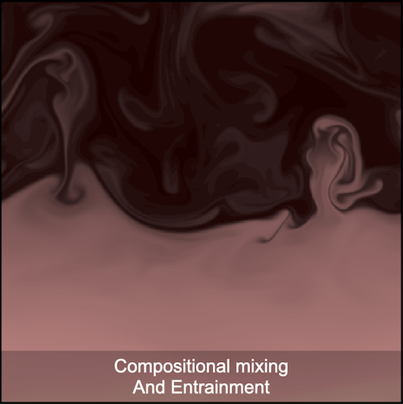
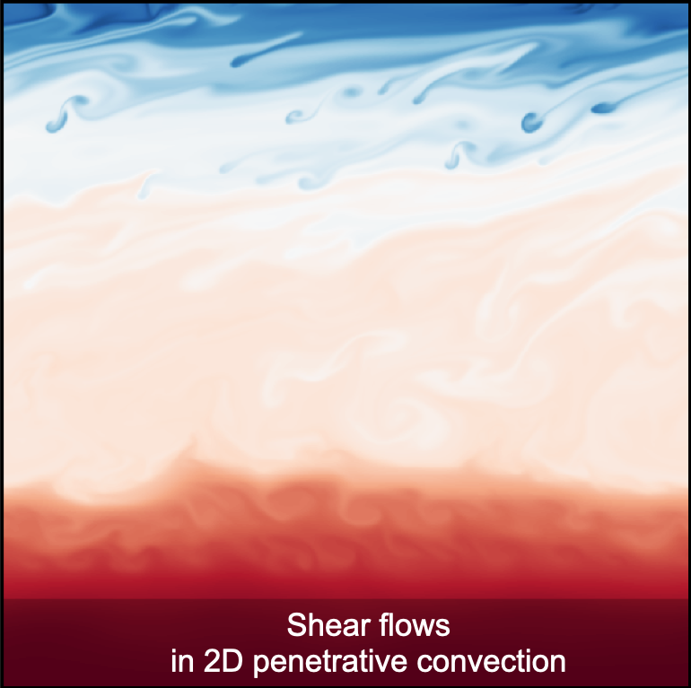
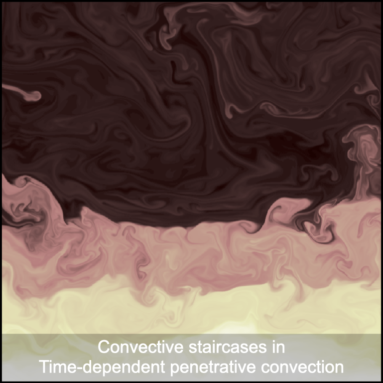

Rafael Fuentes
#astrophysicist #trailrunner #cookies
Welcome! I am a finishing PhD student in the Department of Physics at McGill University, and an incoming Postoctoral Researcher at CU Boulder. Currently, I'm working with Professor Andrew Cumming on hydrodynamic simulations of fluids with composition gradients. Most of my current work is focused on understanding the transport of heavy elements in giant planets. I have also worked on statistical studies for inferring properties of pulsar glitches.
In my free time, I take advantage of the many mountains around Boulder Colorado, for daily hikes and runs.
RESEARCH HIGHLIGHTS


